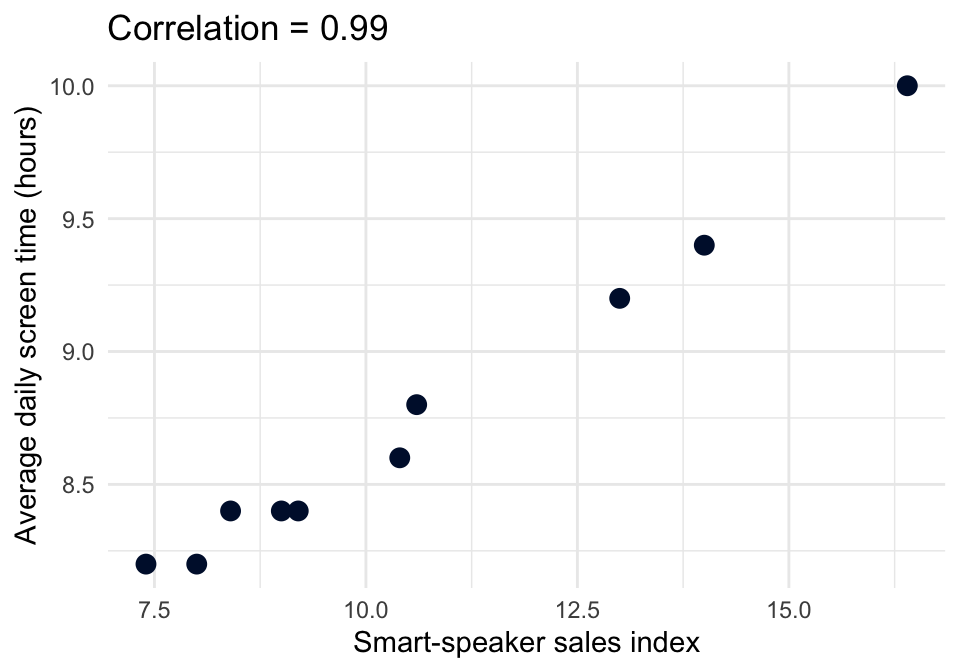
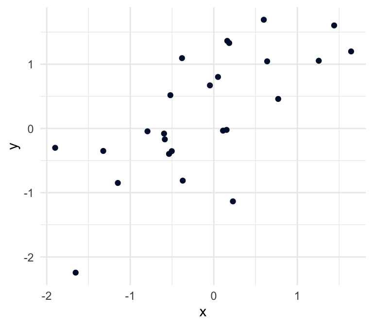
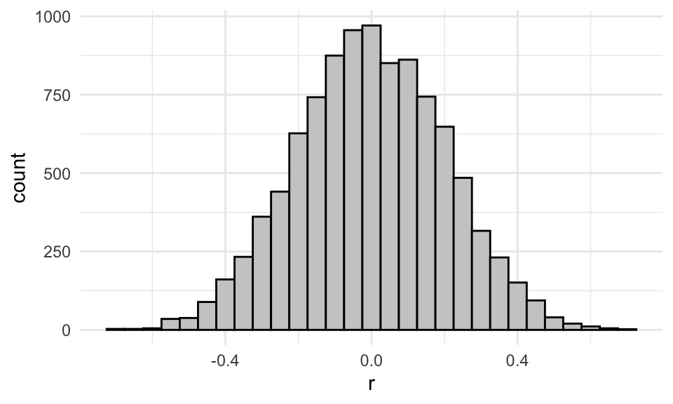
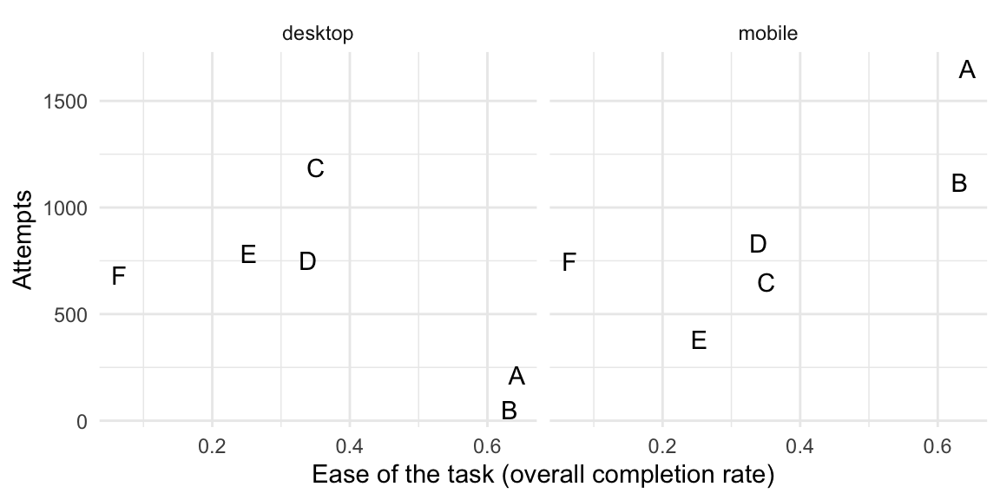
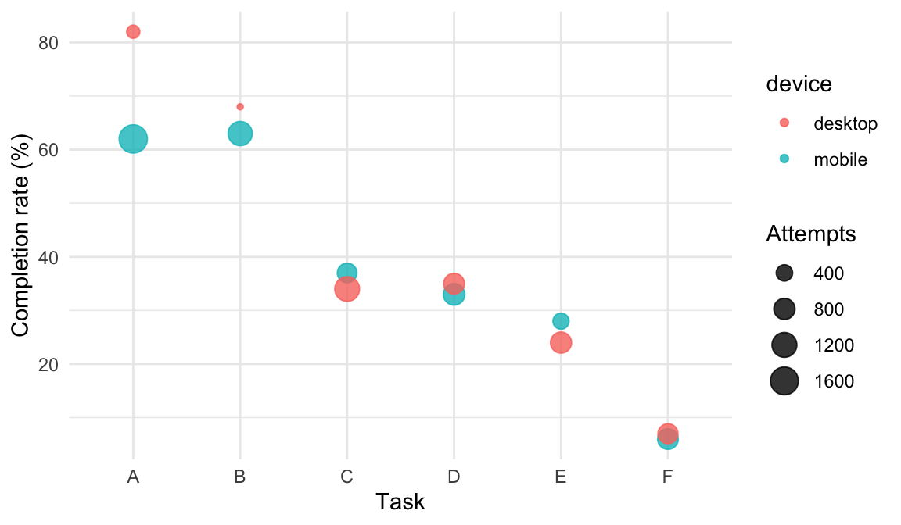
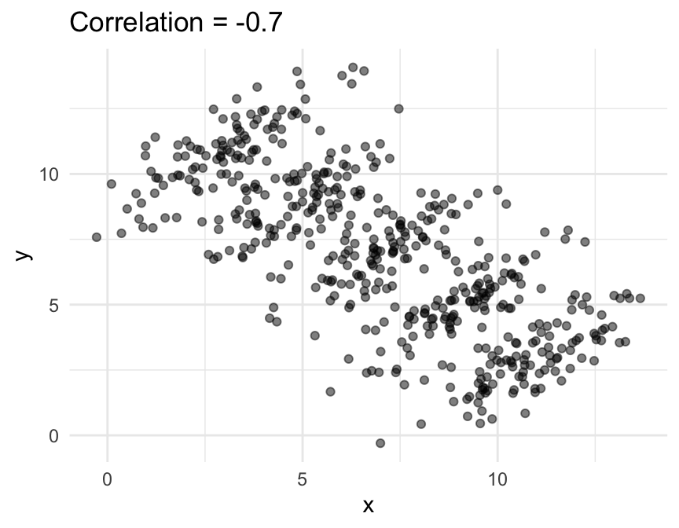
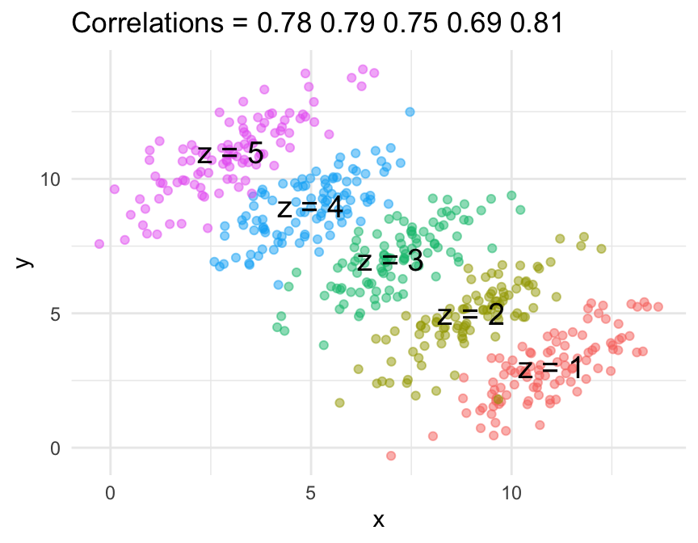
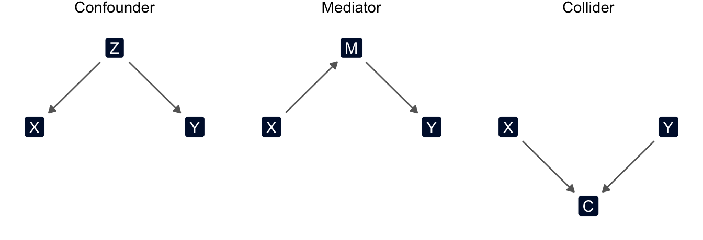

library(tidyverse)
library(behdslabs)6 Association Is Not Causation
Original chapter by Rafael A. Irizarry, from Introduction to Data Science. Adapted by Giorgio Arcara: the datasets are replaced with behavioural ones; new sections on causal claims, moved from Chapter 29; some passages are rewritten without linear models; the text is otherwise Irizarry’s. Details in the CHANGELOG.
Draft
This chapter is a draft, assembled on 22 November 2026 from Irizarry’s chapter Association Is Not Causation and from the causal sections of From Results to Conclusions, and not yet reviewed by the instructor. It may be substantially rewritten.
Correlation coefficients, group comparisons and the models in the later parts of this book all describe associations: how changes in one variable go together with changes in another. It is tempting to read such results as evidence of cause and effect, especially when they seem intuitive or match what we expected. This is one of the most common mistakes in data analysis: association is not causation.
Chapter 4 showed why: a causal claim is about a comparison we can never fully observe, what would have happened to the same people without the intervention, and randomised experiments are the most reliable way to approximate it (Chapter 5). Yet much behavioural research, and most analyses of data collected by apps and devices, rely on observational data, where nobody assigned anything at random. This chapter is about what can produce an association when the causal reading is wrong. It starts from the reason we care about causes at all, separates the design of a study from the technique used to analyse it, and then goes through the main alternative explanations: chance, reverse causation, confounding, selection and measurement bias. It ends with what can make a causal reading of observational data more plausible.
The tools in this chapter are simple: averages, proportions, scatterplots and correlation coefficients (Chapter 17). Correcting for an alternative explanation with a statistical model is the topic of the chapters on regression.
6.1 Explanation and prediction
Data analysis can answer two different kinds of question.
- Prediction: which users are likely to stop using an app next month? A model that predicts well is useful even if we do not know why it works. The number of days since the last login may predict dropout very well, without being its cause.
- Explanation: why do users stop using the app? Here we want to know the causes.
The difference matters because we usually want causes for a practical reason: a cause tells us what to change. Knowing that users who open a stress app more often report more stress may help us predict who is stressed. It does not tell us whether giving people the app would reduce their stress. Only a causal relationship tells us what would happen if we intervened. Most questions in behavioural research and in the design of technologies are, in the end, questions about interventions: should we change the interface, send fewer notifications, offer the training? These need causal answers.
As discussed in Chapter 4, randomised experiments answer causal questions on average, across groups. Without randomisation, we must argue that the groups we compare are comparable, and this argument can fail in several ways.
6.2 Correlational designs and correlation analyses
The phrase association is not causation is also often found as correlation is not causation. The two are nearly equivalent, but the second is insidious, because it is easily misread as a statement about a statistical technique, the correlation coefficient. Both are statements about the relationship between the observed variables, and what we can conclude about that relationship depends on the design of the data collection, not on the analysis (Section 4.2). A correlation coefficient computed on data from a randomised experiment can support a causal conclusion, because random assignment deals with the alternative explanations (see Experimental research and Random assignment in Chapter 4); a t-test computed on data from an observational study cannot, on its own, support a strong causal claim.
Consider a study comparing patients with a neurological condition and healthy controls on a reaction-time task, or heavy and light smartphone users on an attention test. The analysis is a comparison of two groups, with a t-test or a Wilcoxon test (Chapter 18). It looks like an experiment, but nobody assigned participants to the groups: they arrived already belonging to one of them. Such pre-existing groups differ in many ways besides the one that names them. Patients and controls may differ in age, education, medication, fatigue and motivation; heavy smartphone users may differ in age, sleep and job. The study is correlational in design, whatever test is used to analyse it.
Matching participants on some characteristics, such as age and education, makes the groups more comparable on those characteristics (Figure 4.6), but not on the ones that were not measured. This is why randomisation, which also balances unmeasured characteristics on average, is so valuable (see Random assignment in Chapter 4, and Figure 4.7).
6.3 Alternative explanations
When two variables are associated, the causal reading (X causes Y) is only one of several explanations. A good interpretation lists the others and asks whether the design rules them out. The main ones are chance, reverse causation, confounding, selection and measurement bias.
Chance
Any association can arise by chance in a sample. The p-value (Chapter 16) quantifies how surprising the data would be if there were no association. Chance is the alternative that statistics handles best, but only if we are honest about how many associations we looked at.
Spurious correlations
The following plot shows a very strong correlation between average daily screen time and an index of smart-speaker sales, over ten consecutive years.

Does this mean that buying fewer smart speakers makes people spend less time on screens? Or that spending less time on screens makes people buy fewer smart speakers? Of course not: both series simply decline over the same ten years. This is an example of what we call a spurious correlation. You can see many more absurd examples on the Spurious Correlations website1.
Data dredging
The cases presented on that website are all instances of what is generally called data dredging, data fishing, or data snooping, a form of cherry picking: looking through many results produced by a random process and picking the one that shows a relationship that supports a theory we want to defend.
A Monte Carlo simulation shows how data dredging finds high correlations among uncorrelated variables. We generate 10,000 groups, and for each group a pair of independent variables, \(X\) and \(Y\), with 25 observations each. Because we built the simulation, we know that \(X\) and \(Y\) are not correlated:
set.seed(2026)
n_obs <- 25
n_groups <- 10000
sim <- tibble(group = rep(1:n_groups, each = n_obs),
x = rnorm(n_obs * n_groups),
y = rnorm(n_obs * n_groups))
res <- sim |>
group_by(group) |>
summarise(r = cor(x, y)) |>
arrange(desc(r))
max(res$r)
#> [1] 0.7The largest correlation is 0.7. If we plot only the data of the group with this correlation, the plot is convincing:
sim |>
filter(group == res$group[1]) |>
ggplot(aes(x, y)) +
geom_point(colour = navy) +
theme_minimal()
Remember that a sample correlation is a random variable. Here is its distribution across the 10,000 groups:
res |>
ggplot(aes(r)) +
geom_histogram(binwidth = 0.05, colour = "black", fill = "grey80") +
theme_minimal()
If we observe 10,000 correlations whose true value is 0 but whose standard error is about 0.2, some of them will be large by chance alone. A test on the selected group alone would give a very small p-value (try cor.test() on it, Chapter 17), and we would wrongly claim a significant association.
Selecting the analysis with the most interesting result is known as p-hacking. An analyst might explore associations between an outcome and many variables and report only the one with a small p-value, try several ways of excluding participants or of adjusting for other variables and keep the one that gives the strongest result, or repeat a study and report only the “successful” run. Such practices are not always intentional misconduct; they often come from limited statistical understanding or wishful thinking. Chapter 20 shows how to correct for the number of tests, and Chapter 30 how these practices contributed to the replication crisis.
Reverse causation
Sometimes the effect causes the putative cause. A claim of this kind appeared in an op-ed in the New York Times titled Parental Involvement Is Overrated2:
When we examined whether regular help with homework had a positive impact on children’s academic performance, we were quite startled by what we found. Regardless of a family’s social class, racial or ethnic background, or a child’s grade level, consistent homework help almost never improved test scores or grades… Even more surprising to us was that when parents regularly helped with homework, kids usually performed worse.
A very likely possibility is that the children who need regular help receive it because they don’t perform well in school.
The same happens with technology. People who feel stressed are the ones most likely to install a stress-reduction app. The following data are simulated so that we know the truth: the probability of using the app increases with a person’s baseline stress, and using the app reduces stress by 0.5 points on a 10-point scale.
set.seed(1983)
n <- 500
baseline <- rnorm(n, 5, 1.5)
app <- rbinom(n, 1, plogis(-6 + 1.1 * baseline))
stress <- baseline - 0.5 * app + rnorm(n, 0, 0.5)
stress_app <- tibble(app = factor(app, labels = c("non-user", "user")),
stress)
stress_app |>
group_by(app) |>
summarise(mean_stress = mean(stress), n = n())
#> # A tibble: 2 × 3
#> app mean_stress n
#> <fct> <dbl> <int>
#> 1 non-user 4.44 289
#> 2 user 5.46 211
t.test(stress ~ app, data = stress_app)$p.value
#> [1] 4.19e-15App users are clearly more stressed than non-users, and the difference is significant. Reading it causally would be backwards: it would say that the app increases stress, when we built the data so that it lowers it. Nothing is wrong with the test or the code: it is the interpretation that is wrong. Only a design that compares the same people before and after, with a control group, or that assigns the app at random, could estimate its effect.
Confounding
Confounders are perhaps the most common reason why associations are misinterpreted. If \(X\) and \(Y\) are associated, we call \(Z\) a confounder if it, or some factor associated with it, causes both \(X\) and \(Y\), creating an association between them unless we properly account for \(Z\). Chapter 4 shows an example: workload increases both app use and stress.
Confounding can even reverse an association. The app_task_completion dataset records, for six in-app tasks (A to F), how many attempts users made on mobile and on desktop, and the percentage of attempts that were completed. Overall, mobile attempts are completed more often:
app_task_completion |>
group_by(device) |>
summarise(completion = sum(completion_rate * n_attempts) / sum(n_attempts),
attempts = sum(n_attempts))
#> # A tibble: 2 × 3
#> device completion attempts
#> <chr> <dbl> <dbl>
#> 1 desktop 30.3 3670
#> 2 mobile 44.5 5382Mobile looks about 14 points better. But here are the completion rates task by task:
app_task_completion |>
select(task, device, completion_rate) |>
pivot_wider(names_from = "device", values_from = "completion_rate") |>
mutate(desktop_minus_mobile = desktop - mobile)
#> # A tibble: 6 × 4
#> task mobile desktop desktop_minus_mobile
#> <chr> <dbl> <dbl> <dbl>
#> 1 A 62 82 20
#> 2 B 63 68 5
#> 3 C 37 34 -3
#> 4 D 33 35 2
#> 5 E 28 24 -4
#> # ℹ 1 more rowFor five of the six tasks the differences are small, and task A clearly favours desktop. All these differences are much smaller than the 14-point difference in favour of mobile in the overall totals. What is going on?
Discovering confounders often requires exploratory data analysis and critical thinking. The table shows that completion rates vary a lot across tasks: some tasks are much harder than others. Could this explain the overall result? We add an ease column, the overall completion rate of each task, and look at how many attempts each device made at tasks of different ease:
app_task_completion <- app_task_completion |>
group_by(task) |>
summarise(ease = sum(completion_rate * n_attempts / 100) / sum(n_attempts)) |>
right_join(app_task_completion, by = "task")
app_task_completion |>
ggplot(aes(ease, n_attempts, label = task)) +
geom_text() +
facet_wrap(~device) +
labs(x = "Ease of the task (overall completion rate)", y = "Attempts") +
theme_minimal()
Desktop users make far fewer attempts at the easy tasks (A and B) and spend most of their attempts on the hard ones. Task difficulty influences both which device is used for which task and the chance of completing it: it is a confounder.
Stratifying
The first hint that the overall comparison was misleading came from looking at each task separately. This technique is called stratifying: we examine the relationship between two variables within groups (strata) that have the same value of a known or potential confounder. Stratification helps detect how a confounder distorts an analysis, and suggests how to adjust for it.
app_task_completion |>
ggplot(aes(task, completion_rate, colour = device, size = n_attempts)) +
geom_point(alpha = 0.8) +
labs(x = "Task", y = "Completion rate (%)", size = "Attempts") +
theme_minimal()
app_task_completion. The size of each point is the number of attempts.Task by task, the two devices are similar. The large number of mobile attempts at tasks A and B, which are completed more than 60% of the time, makes mobile look better overall.
This dataset has the same structure as a classic real example: graduate admissions by sex at the University of California, Berkeley, in 1973 (P. J. Bickel, E. A. Hammel & J. W. O’Connell, Science, 1975)3.
Simpson’s paradox
When the overall comparison and the stratified ones point in different directions, the result is called Simpson’s paradox. It is called a paradox because the sign of the association flips when we move from the whole population to the strata. Here is an illustration with three simulated variables, \(X\), \(Y\) and \(Z\):

\(X\) and \(Y\) are negatively correlated. Once we stratify by \(Z\) (shown in colour below), another pattern emerges:

It is \(Z\) that is negatively associated with \(X\) and positively associated with \(Y\), inducing a negative overall correlation between \(X\) and \(Y\). Within each stratum of \(Z\), \(X\) and \(Y\) are positively correlated.
Stratifying works only for confounders that we thought of and measured. In an observational study, there may always be others.
Selection
The people in a dataset are rarely a random sample of the population we are interested in. Only some people agree to take part in a study (and sign the informed consent), only some users leave a review, and only some participants stay until the end. If the process that brings people into the data is related to the variables we study, it can create, hide or distort associations. This is selection bias. For example, comparing the outcomes of two clinics might suggest that clinic A provides worse care than clinic B. But if clinic A is a specialised centre that receives the most severe patients, while clinic B handles mostly routine cases, the difference reflects who is admitted, not the quality of care.
A subtle form of selection occurs when the selection depends on two variables at once. Suppose an app store recommends an app if it has either an excellent design or excellent marketing. In the simulated data below, design quality and marketing quality are unrelated across all apps. Among the recommended apps, they are negatively correlated: a recommended app with poor marketing must have an excellent design, and vice versa.
set.seed(2026)
apps <- tibble(design = rnorm(1000), marketing = rnorm(1000)) |>
mutate(recommended = design + marketing > 1.5)
cor(apps$design, apps$marketing)
#> [1] -0.0174
apps |> filter(recommended) |> summarise(r = cor(design, marketing), n = n())
#> # A tibble: 1 × 2
#> r n
#> <dbl> <int>
#> 1 -0.673 123Looking only at the recommended apps, we could conclude that good marketing comes at the cost of design. The association was created by the selection. A variable that is influenced by two others, like recommended here, is called a collider, and selecting or adjusting on it creates spurious associations. The same mechanism operates when a study includes only participants who completed it, or only patients who were referred to a clinic: two unrelated conditions may appear associated among hospital patients simply because each of them increases the chance of being hospitalised.
Measurement bias
Measurement bias (or misclassification) occurs when variables are measured with error, especially when the errors differ across groups. Suppose a study relates self-reported daily smartphone use to sleep problems. If everybody underestimates their use by a similar amount, the bias is nondifferential, and it tends to weaken the observed association (see Measurement error and its consequences in Chapter 1). If the error differs between groups, for example if people with sleep problems, who have thought about their habits, report their phone use more accurately, the bias is differential, and it can exaggerate or even reverse the association.
Drawing the alternatives
Confounders, colliders and a third structure, the mediator (a variable through which the cause acts, such as app use → fewer notifications → less stress), can be drawn as diagrams in which arrows point from causes to effects:

Such diagrams are called directed acyclic graphs (DAGs). They are a formal tool for deciding which variables must be taken into account to estimate a causal effect, and which must not. They are beyond the scope of this book; Rohrer (2018), in the further reading, is an accessible introduction.
Adjusting is not free
A common reaction to confounding is to include in the analysis every variable that might matter. This is not always safe. Adjusting for a confounder removes a spurious association, but adjusting for a mediator removes part of the effect we want to estimate, and adjusting for a collider creates an association that was not there, as in the app-store example. Which variables to include in a model is therefore a causal decision, not only a statistical one. How to adjust for a confounder with a regression model, and what such an adjustment cannot do, is shown in Section 26.6.
6.4 Towards causal claims from observational data
When an experiment is impossible, because it would be unethical, too expensive, or because the causes cannot be manipulated, causal questions must be studied with observational data. No single observational study settles a causal question, but some features make a causal reading more plausible. A classic list comes from the epidemiologist Austin Bradford Hill (1965), who discussed smoking and lung cancer. Among his criteria:
- Temporality: the cause comes before the effect. Longitudinal designs can show this; cross-sectional designs usually cannot.
- Strength and dose–response: a strong association, which increases with the amount of exposure.
- Consistency: the association is found by different studies, in different samples, with different methods.
- Plausibility: there is a credible mechanism linking cause and effect.
- Experiment: when the exposure is changed, the outcome changes.
To these we can add the condition this chapter has been about: the alternative explanations (chance, reverse causation, confounding, selection, measurement bias) have been considered and, as far as possible, ruled out. None of these criteria is a proof. They are a way of organising the evidence, and useful questions to ask of any causal claim based on observational data. How to weigh them when interpreting a result is the topic of Chapter 29.
6.5 Further reading
- J. M. Rohrer (2018), Thinking clearly about correlations and causation: Graphical causal models for observational data, Advances in Methods and Practices in Psychological Science, 1(1), 27–42, https://doi.org/10.1177/2515245917745629.
- M. A. Hernán & J. M. Robins (2020), Causal Inference: What If. Boca Raton: Chapman & Hall/CRC. Freely available from the authors’ website.
- P. W. Holland (1986), Statistics and causal inference, Journal of the American Statistical Association, 81(396), 945–960.
- A. Bradford Hill (1965), The environment and disease: association or causation?, Proceedings of the Royal Society of Medicine, 58, 295–300, https://doi.org/10.1177/003591576505800503.
6.6 Exercises
1. For each of the following studies, say whether the design is experimental, quasi-experimental or observational, and name one alternative explanation for the result. (a) Participants are randomly assigned to complete an attention task with or without notifications; those with notifications are slower. (b) Heavy smartphone users are slower than light users on the same task. (c) After a university introduced a notification-free policy during lectures, students’ exam grades rose compared with the previous year.
2. Using app_task_completion, compute the overall completion rate by device, and then the completion rate by device for tasks C to F only. Explain the difference in your own words.
3. Run the app-store simulation again with a threshold of 0 instead of 1.5, and then of 2.5. How does the correlation among recommended apps change? Why?
4. Run the data-dredging simulation again with 50 observations per group instead of 25. How does the largest correlation change? Why?
For the next exercises, we examine success rates of applications to a technology research-grant programme, by applicant gender and by technology domain. Imagine that a report on the programme concluded that the review process favours men, because men’s applications succeed more often than women’s. A response argued that this could be a case of Simpson’s paradox: if a higher percentage of women apply in more competitive domains (with low success rates for both men and women), an analysis across all domains could incorrectly show evidence of gender bias. (The data have the same structure as a real debate about research funding in the Netherlands, published in PNAS in 2015.) Who is correct here, the report or the response? The data are in:
library(behdslabs)
tech_grant_funding_gender_gap5. Construct the two-by-two table (gender × awarded or not) used for the report’s conclusion, and compute the difference in success rates between men and women.
6. Create a dataset with the number of applications, awards and success rate for each gender and domain. Re-order the technology domains by their overall success rate. Hint: use reorder() first, then pivot_longer(), separate() and pivot_wider().
7. Plot the success rates against the technology domains, ordered by overall success, with colour for gender and size for the number of applications. Compare the plot with the task-completion example. Is there a clear confounder? Are women more likely to apply in the domains with the lowest success rates, as the response claims? Do some domains favour men and others women?
8. After reading Chapter 21: is the overall difference in exercise 5 statistically significant? Test each domain separately as well. We performed nine tests: could the significant ones be spurious (Chapter 20)?